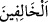

de...”
“Onlardan” zamiri ile münâfık olsun samimi mümin olsun mutlak olarak Tebük
savaşına katılmayanlar değil, Medine’de kalan münâfıklar kastedilmektedir. Çünkü
Tebük savaşına iştirak etmeyenlerden bazıları, müslüman olmakla birlikte savaşa
gitmeye mâni olan özürlerinden dolayı iştirak edememişlerdi. Yâhut da “onlardan”
zamiri ile geriye kalan münâfıklar kastedilmektedir. Çünkü münâfıklardan kimi ölmüş,
kimi bölge dışına çıkmış, kimi tevbe etmiş, kimi de (savaşa katılmamak için) izin
istememişti.
Katâde’den rivayet edildiğine göre bunlar on iki kişiydiler. Bunların kimler olduğu
hakkında çok şey söylenmiştir.
“(onlar savaşa) çıkmak için senden izin isterlerse” Katıldığın bu Tebük gazvesinden
sonra seninle birlikte başka bir gazveye çıkmak için senden izin isterlerse “de ki: “Aslâ
benimle çıkmayacaksınız” (Seninle birlikte savaşa çıkmaları için) onlara asla izin
verme. Âyette “çıkmayacaksınız” ifadesi, mübâlağa için haber verme mânâsında bir
nehiydir. Ayetin devamındaki şu ifâde de aynı şekildedir: “Benimle beraber”
düşmanlardan herhangi bir “düşmanla savaşmayacaksınız.”
“Siz ilk seferde oturmağa râzı olmuştunuz,” Bu cümle, daha önce geçen hususların
illetini belirtmektedir. Yâni siz önceki seferde, yani Tebük savaşına çağrıldığınızda
savaştan geri kalmaya râzı olmuş, buna sevinmiştiniz.
“öyle ise geri kalanlarla beraber oturun.” Bundan böyle kadın ve çocuklar gibi
cihada liyakatleri olmadığı için âdetleri evde oturmak olanlarla birlikte oturun. “__WORD__” (geri kalanlar) lafzında, erkeklerin kadınlara tağlîbi sözkonusudur.
“Münâfıkların kelime-i şehâdeti söylemeleri, namaz, zekat, oruç, hac ve cihad gibi
amelleri işlemeleri, Allah katında makbul olmasa da Peygamber Efendimiz nezdinde
makbul idi. Nitekim Peygamber Efendimiz (a.s.) şöyle diyordu:
“Biz zâhir ile hükmederiz, sırları Allah üzerine alır.”[226]
Öyleyse Allah Teâlâ’nın Nebî (a.s.)’a Tebük savaşından geri kalanların bundan böyle
kendisiyle birlikte savaşa çıkmaları, düşmanla savaşmaları ve diğer amellerini kabul
etmemesini emretmiş olmasındaki hikmet nedir?” diye sorulursa, biz deriz ki: Gerçi en
doğrusunu Allah bilir, bundaki hikmet şudur: Münâfıklar içlerindeki inkarı ve
münâfıklığı gizliyor olmakla birlikte görünüşte müslüman olduklarını ve Hz. Peygamber
(a.s.)’ın emirlerine uyduklarını iddia ettikleri için amelleri Peygamber Efendimiz
katında kabul görüyor, sırları ise tevbe edip münâfıklıktan gerçek imana dönerler
ümidiyle Allah’a bırakılıyordu. Ancak onlar içlerinde gizledikleri şeyleri açığa
vurunca, yaptıkları amelleri kendilerine reddedilmiştir. Bu durumda da hüküm yine
zahire göre verilmiştir. İyi anla.
Âlimler demişlerdir ki: Allah Teâlâ, savaştan geri kalmalarının cezası olarak
münâfıkları gâzîlerin divanından çıkarmış, isimlerini mücâhidlerin defterinden silmiştir.
Onların mahallini Peygamber Efendimiz’in (s.a.) sohbet meclisinden uzaklaştırmıştır.
Çünkü onlar savaştan geri kalmakla ihanet etmişler, münâfıklıklarını açığa vurmuşlardır.